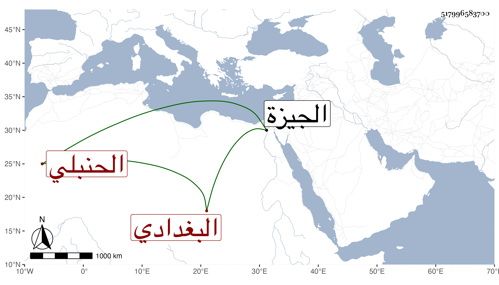

0902Sakhawi.DawLamic.ITO20230111-ara1.EIS1600.517996583700
Biography ID: 517996583700
473
عثمان بن فضل الله بن نصر الله الفخر بن الزين البغدادي الأصل الحنبلي شيح الخروبية بالجيزة . ولد في صفر سنة ثلاث عشرة وثمانمائة . وأجاز له جماعة استقر في المشيخة بعد أبيه وسمع بها على ابن ناظر الصاحبة والعلاء بن بردس وابن الطحان بحضرة البدر البغدادي القاضي شيئا من مرويهم ولم تزل المشيخة معه حتى رغب عنها بأخرة شركة بين ابن طه وغيره واستناباه فيها وجلس شاهدا بحانوت الحلوانيين وسيرته غير مرضية وأصوله سادات أئمة مات في سنة أربع وتسعين .
